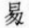

宋魏慶之撰。慶之字醇甫。號菊莊。建安人。是編前有淳祐甲辰黃昇序。案昇字原本作曰。校：非標準字据彙訂本第6681頁補。蓋偶從篆體。說在昇花菴詞條下稱其有才而不屑科第。惟種菊千叢。日與騷人逸士觴咏於其閒。蓋亦宋末江湖一派也。宋人喜爲詩話。裒集成編者至多。傳於今者惟阮閲詩話總龜。蔡正孫詩林廣記。胡仔苕溪漁隱叢話。及慶之是編。卷帙爲富。然總龜蕪雜。廣記挂漏。均不及胡魏兩家之書。仔書作於高宗時。所錄北宋人語爲多。慶之書作於度宗時。所錄南宋人語較備。二書相輔。宋人論詩之概。亦略具矣。慶之書以格法分類。與仔書體例稍殊。其兼採齊己風騷旨格僞本。詭立句律之名。頗失簡擇。又如禁體之中。載蒲鞵詩之類。亦殊猥陋。論韓愈精衞銜石塡海。人皆譏造次。我獨賞專精二句。爲勝錢起曲終人不見。江上數峯靑二句之類。是非亦未平允。然採摭旣繁。菁華斯寓。鍾嶸所謂披沙簡金。往往見寶者。亦庶幾焉。固論詩者所必資也。